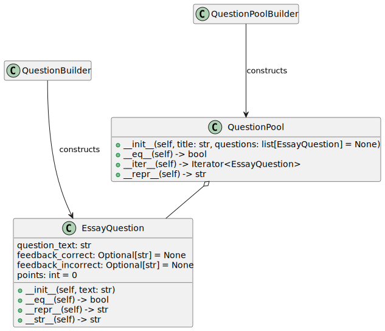

Assembling Classes
Thomas J. Kennedy
1 The Problem
Developing questions for quizzes, exams and similar assessments is often difficult. Questions need to have…
-
multiple variants
-
feedback for correct answers
-
feedback for incorrect answers
-
possible points
Our goal is to work with question pools (i.e., groups of related questions). We want to build a few classes…

The two builder classes will be handled by another team. (i.e., they will be provided). Your work will focus on EssayQuestion and QuestionPool. We will pretend that EssayQuestion is the only type of question.
This will be a two-part exercise. This assignment will focus on EssayQuestion and the next assignment will focus on QuestionPool.
1.1 Input
There is no input to this program.
1.2 Output
There is no main function in this program. the EssayQuestion class will evaluated with a test suite within tests/test_essay_quesion.py.
2 Your Tasks
Your task is to create the EssayQuestion class as documented in the UML Class diagram within the The Problem section. You may either:
-
implement the
EssayQuestionclass from scratch with a basic class -
implement the
EssayQuestionclass with the@dataclassdecorator
Your implementation must result in an EssayQuestion class with the following data members:
-
question_text- anstrthat contains the actual question text. -
feedback_correct- an optionalstrthat provides feedback for correct answers. The default value must beNone. -
feedback_incorrect- an optionalstrthat provides feedback for incorrect answers. The default value must beNone. -
points- an optionalintthat provides the default point value for the question. The default value must be0.
Your EssayQuestion implementation must provide the following methods:
-
__init__- the standard constructor. It must accept a singlestrparameter (title) which serves as the question text. -
__eq__- compares twoEssayQuestionobjects by comparing question text and no other fields. -
__repr__- generates debugging output. Your implementation must generate output in the following form…EssayQuestion( question_text="...", feedback_correct="...", feedback_incorrect="...", points=... )The ellipses are placeholders for the actual values.
-
__str__- generates production output. Your implementation must generate output in the following form…Points: [points] [Question Text] Feedback: Correct: [feedback] Incorrect: [feedback]The items denoted be square brackets are placeholders for the actual values.
3 Mechanics
The test code can be run with…
python3.11 -m pytest -v tests
4 Files
There are two (2) files in this assignment:
essay_question.pytests/test_essay_question.py
You will be working in essay_question.py. Do not modify the other files.
You have three choices when starting this assignment:
-
Grab a copy of a starting repository from GitHub
If you are both familiar with and comfortable with Git & GitHub… I recommend forking the repository
-
Download a zip file by clicking this link
-
Download a zip file by running
wget 'https://github.com/Old-Dominion-Univ-CS-Dept/2025-Spring-CS263-Classes/archive/refs/heads/main.zip'in a Linux terminal
Despite some of the frustration Git may have caused in CS 252… Git and GitHub are two tools that:
You will use in CS 350 (and be graded on your understanding of both tools)
You will use in your software engineering career after graduation.
4.1 Zip File on Windows and macOS
If you are on Windows or macOS… use your built-in zip utilities.
4.2 Zip File in a Linux Terminal
You can extract a zip file from the Linux Command line using the unzip command, e.g.,
unzip NAME_OF_THE_ZIP_FILE_TO_EXTRACT.zip
5 Grading
Your grade will be based on the following criteria…
- test 000 - code passes
test_all_fields_present - test 001 - code passes
test_default_values - test 002 - code passes
test_eq - test 003 - code passes
test_repr - test 004 - code passes
test_str
6 Submitting
You will submit your completed copy of essay_question.py as a file upload through Canvas.
Do not alter any of the other source code files, nor change the module interface.